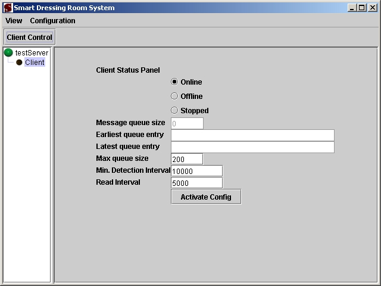
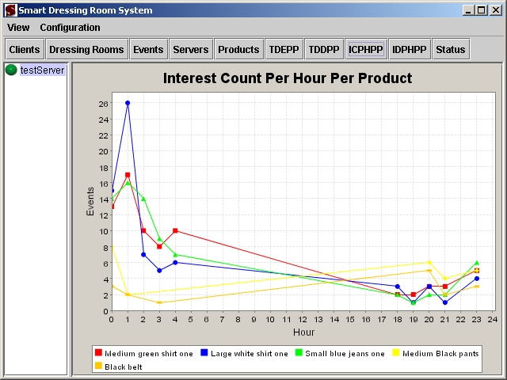
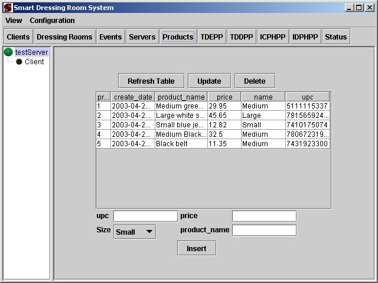
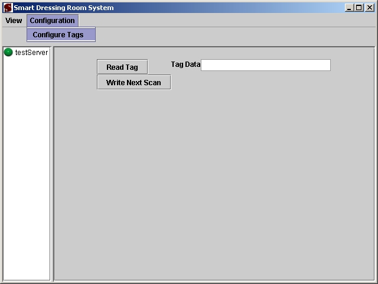

Smart Dressing Room System:
The Smart Dressing Room System is designed for deployment to retail-clothing store dressing rooms. The system will determine consumer interest regarding retail-clothing products by detecting a products entry to and exit from a dressing room. Passive radio frequency identification, also know as Passive RFID, technology, Java, and Linux will be used to implement this system. The system will be comprised of dressing room client modules, a system control module, and a server module. The client modules will report product entry and exit data to the server module. The system control module will provide management functionality for the system. The server module will provide data storage and statistical processing for the system.
Prior to operating the system, the items that will be tracked must be configured. Configuration consists of encoding an RFID tag with the universal product code of the item and attaching the encoded tag to the item. System users have the option of configuring all of their merchandise or configuring a sample of each type of merchandise.
During normal operation, the system client modules placed in the stores dressing rooms will detect RFID tags entry and exit of their communications range. The communications range of the clients will cover the majority if not all of the dressing room.
Users of the system will be able to view system activity through the system control components graphical interfaces. These interfaces will provide graphical representations of the events detected by the system. The interfaces will also allow an administrator to manage the system and its data.



